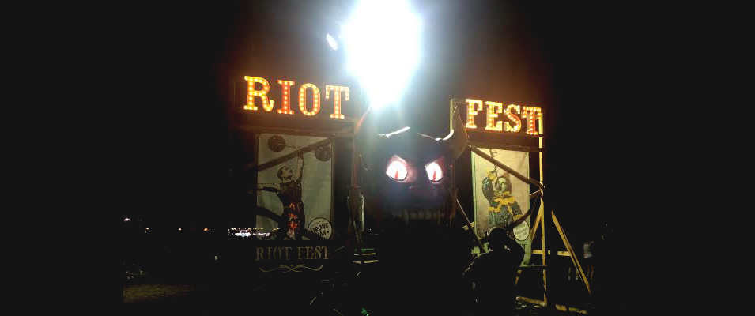
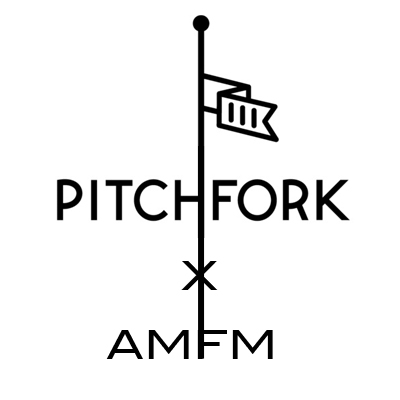
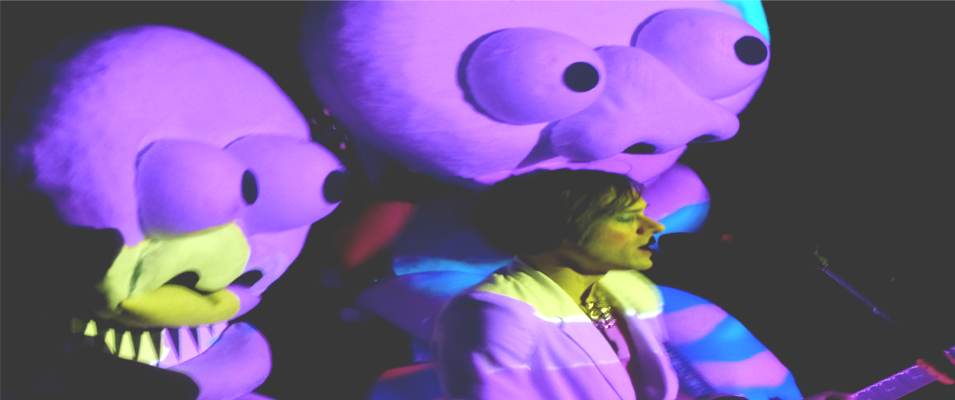
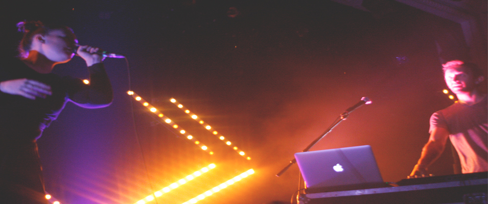

 iot Fest is unlike any other concert festival experience. Where else can you get great music acts of many genres, carnival rides, an art inspired putt putt field, a freak show, a hot air balloon, and a mud bath all in one place? The tri-city music festival celebrated it’s tenth year on new grounds. The festival which traditionally was held in Humboldt Park on Chicago’s northside, moved to Pilsen’s Douglas Park this year...[read more]
IN REVIEWS:
 Pitchfork Music Festival
Check out our day by day recap of Pitchfork Music Festival in Chicago! The weekend included a host of eclectic musical acts from indie rock to electronic and hip hop. There was a lot of Chicago pride, as legendary rockers Wilco headlined the fest Friday, Vic Mensa headlined the Blue Stage Saturday, and Chance The Rapper closed out the festival...[read more]Esperanza Spalding
Esperanza Spalding graced the stage of Lincoln Hall, for not just one, but two nights to showcase her latest project Emily D’s + Evolution. The project is a dream come reality. Spalding says she had a dream one night during a full moon, and dreamt up the series. It was a nod to her childhood fantasies of theater and song. The show was just thatl...[read more]NAN || Summer Solstice Festival || Milwaukee
Since its inception 15 years ago Milwaukee’s Summer Soulstice Music Festival has yet to feature a hip-hop act as their headliner. That changed on Saturday night when the New Age Narcissism (NAN) collective took the stage. Two of the event’s main organizers, Chuck Watson and Aron Smith (MC Oneself), were once members of the iconic...[read more]The House Show || May ||
If Kanye can have his Dark Twisted Fantasy, The House Show can have its dark romantic symphony. This month’s installment of Will Post’s The House Show included performances from Herf Yamaya, Andrew Lothian, and Will Post, and the music that evening was beautiful, dark and sad. In most cases, one would not want to spend a hot spring...[read more]Detroit Movement 2015
There’s a reason we keep coming back to Detroit for Movement, and why the festival has been growing and going strong for 16 years. The festival is held annually over the Memorial Day weekend in the heart of Detroit, Hart Plaza. Known for its roots in Motown and Electronic music, Detroit is far from just musically inclined, it’s musically...[read more]Kiesza at Metro Chicago
One Monday at Metro in Chicago, fans came out to hear the sounds of Kiesza for her “Sound of a Woman” Tour. The vibe in the room was electric, between Kiesza’s stage energy and her two wing women dancers, the audience could have gone all night. Opening for Kiesza was Australia’s Betty Who, who came with a complete girl squad to share...[read more]Ana Tijoux at Thalia Hall
Ana Tijoux proved she was a powerhouse player not only in the musical sense but also as an activist and for the people. SoundCulture hosted the Chilean French emcee, who performed before a committed crowd Sunday night at Thalia hall. It felt more like a Saturday than a late Sunday evening. Los Santos and Pilsen's very own Aya...[read more]Jessie Ware at Metro Chicago
The lights dimmed and Ware sauntered onto the stage in all black smiling and waving at the screaming crowd before taking the microphone and belting out the first songs of her Tough Love Tour, “Running,” and Champagne Kisses.” Ware has got some loyal fans who have followed her rise to fame, from her early beginnings playing at...[read more]There is something spiritual and ritualistic about the Cuban, French sisters of Ibeyi. Ibeyi, which means “twins” in yoruba, played to a sold out audience at Lincoln Hall. Their music is hauntingly beautiful, so much so that the ancestors were definitely in the room that evening. Lisa-Kaindé Diaz and Naomi Diaz emerged on stage...[read more]
Benjamin Booker at Metro Chicago
Benjamin Booker may look like the boy next door, he came out onto stage beer in hand, wearing black jeans, a long sleeve shirt and a green Cubs baseball hat, but he most definitely is not. The young rising star from New Orleans played at the legendary Metro Chicago last night to a sold out crowd. A feat he said he will cross off his bucket list, after noting that Nirvana...read more]
The House Show is a musical experience unlike any other. It'is like a house party with sophisticated music performances, free food and flowing drinks. This wasn’t like your average high school house party where your friend’s garage band was the entertainment for the evening. This was much much more. I felt right at home...[read more]
 When it comes to St. Patrick’s Day weekend, the city of Chicago is like a drunken apocalypse. And, the one neighborhood where all the drunken revelers congregate is of course, Wrigleyville, where Of Montreal performed at Metro to a sold out crowd at Metro on this bacchanalian holidayI found myself walking into the Metro doors on that...[read more]
 Nick Sanborn and Amelia Meath, the duo that makes up the electro folk duo, Sylvan Esso, have a certain cosmic connection, and there was something magical about their performance at Metro Chicago this Saturday. Categorizing them to simply electro-folk, is an understatement. Throw in a little pop, hip-hop sprinkled with a lil R&B...[read more]
There is something captivating about the UK songstress FKA Twigs. Perhaps it is the quiet seductive charm that she exudes, the way she makes love to the mic with her breathy vocals, her artistic take on the modern sounds of R&B, or all of the above. With all that being said and true, she had the crowd at Metro Chicago completely under...[read more]